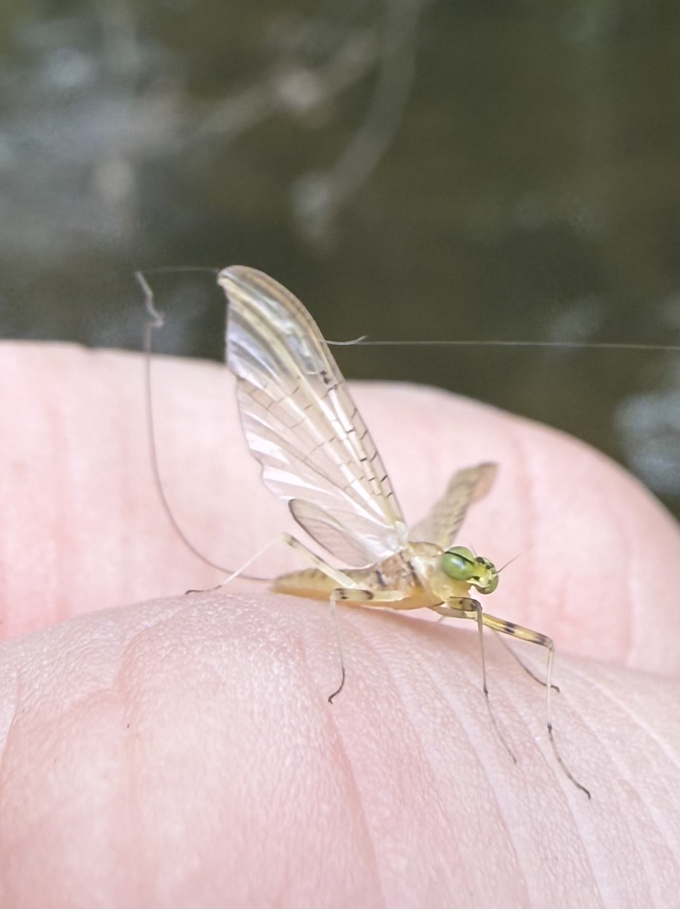
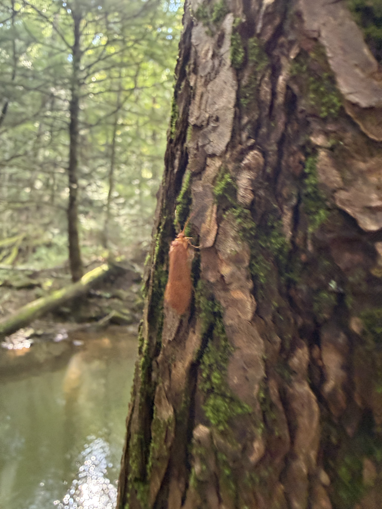
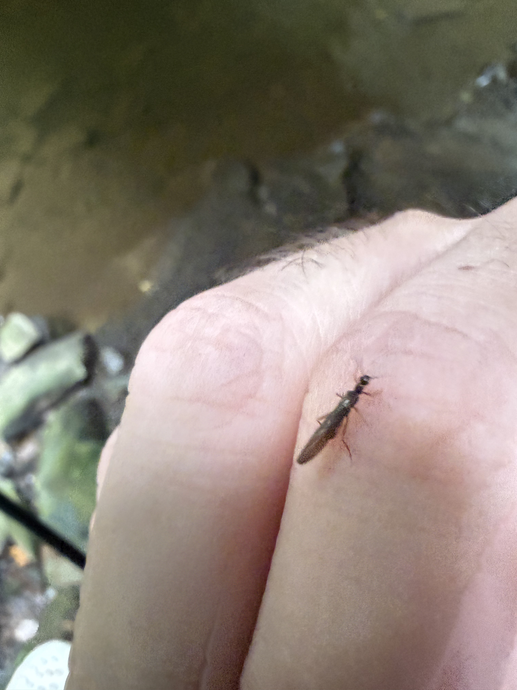
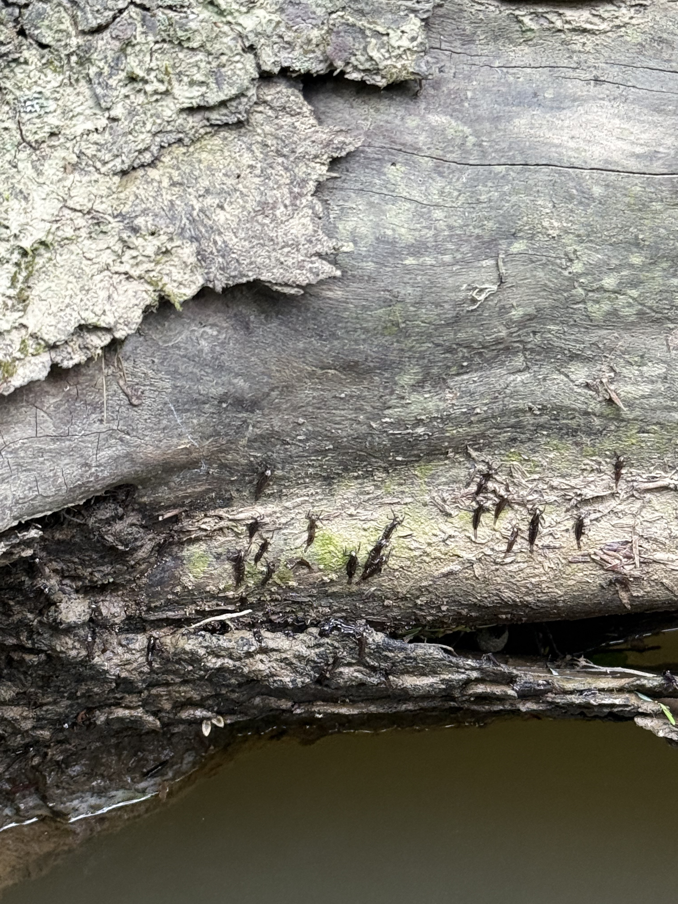

Hatch Guide
Understanding aquatic insects is an important
part of successful fly fishing.
Trout feed on a variety of insects throughout
the year, and knowing which insects are active
can help anglers select appropriate fly patterns.
A hatch generally refers to aquatic insects
emerging from the water into their winged
adult stage.
Hatch timing can vary depending on water
temperature, weather conditions, stream
location, and the time of year.
Common Aquatic Insects
Several groups of aquatic insects are
especially important to trout anglers.
These include mayflies, caddisflies,
stoneflies, and midges.

Mayflies
Mayflies spend most of their lives
underwater as nymphs before emerging
into winged adults.
Mayflies are commonly imitated using
nymph, emerger, dry fly, and spinner
patterns.
Common examples include Blue-Winged
Olives, Hendricksons, March Browns,
and Light Cahills.

Caddisflies
Caddisflies begin their lives underwater
as larvae. Some species build protective
cases from sand, small stones, or
plant material.
They eventually develop into pupae
before emerging as winged adults.
Popular fly patterns include the
Elk Hair Caddis and various
caddis larva and pupa imitations.

Stoneflies
Stoneflies spend their immature
stages underwater as nymphs.
Unlike many mayflies, stonefly
nymphs usually crawl onto rocks
or vegetation before emerging
into winged adults.
Stonefly nymph patterns can be
effective when fishing near
the streambed.

Insect Life Stages
Aquatic insects pass through different
developmental stages.
Some are available to trout as
underwater larvae or nymphs,
while others become vulnerable
during emergence or as adults.
Observing insects around rocks,
logs, and the water's surface
can help anglers determine
which fly patterns to use.
Seasonal Hatch Reference
Different aquatic insects become active
throughout the fishing season.
The following table provides a general
overview of common insect activity
in Western Pennsylvania.
Actual hatch timing varies by stream,
elevation, and weather conditions.